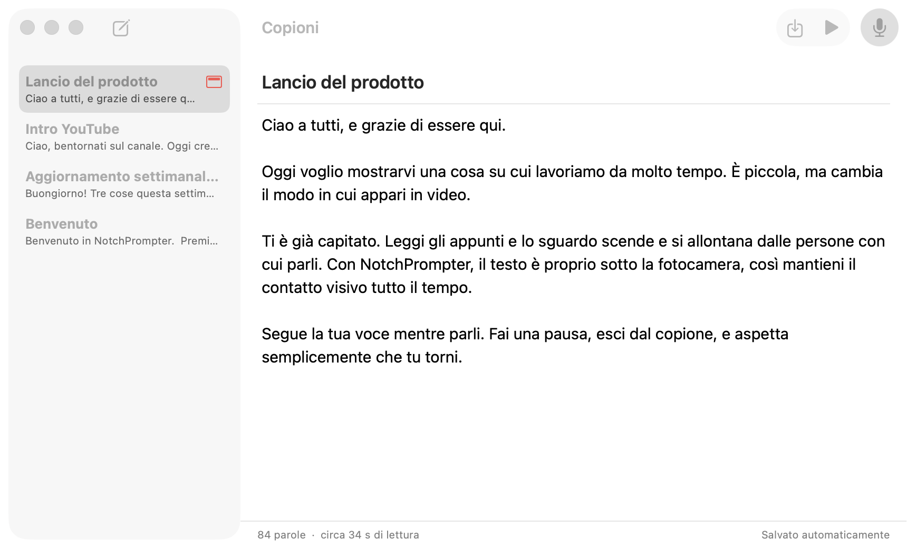
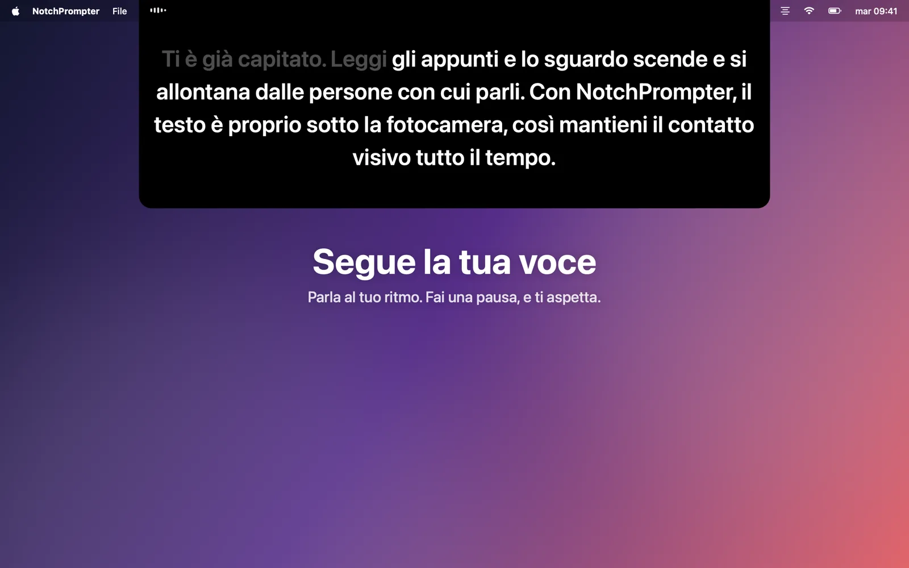
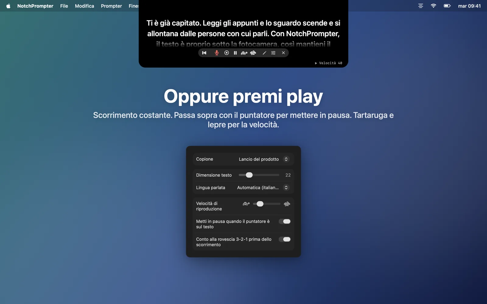
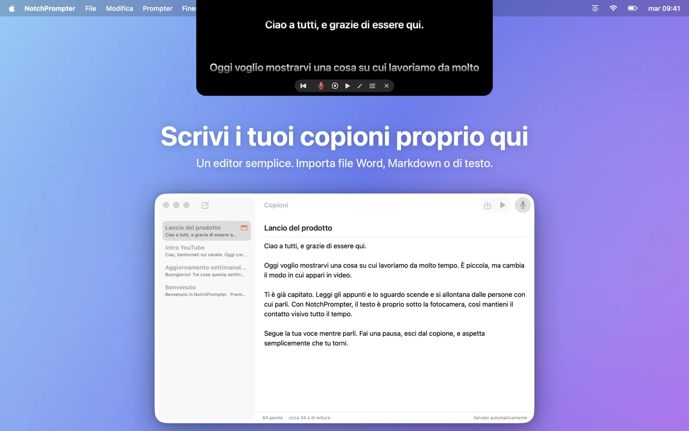
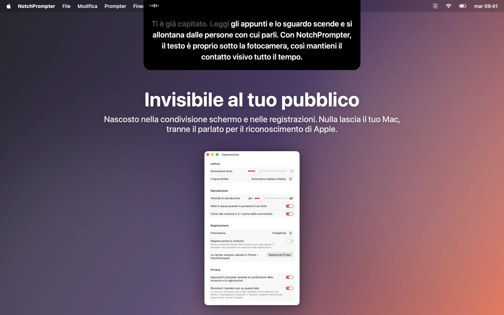
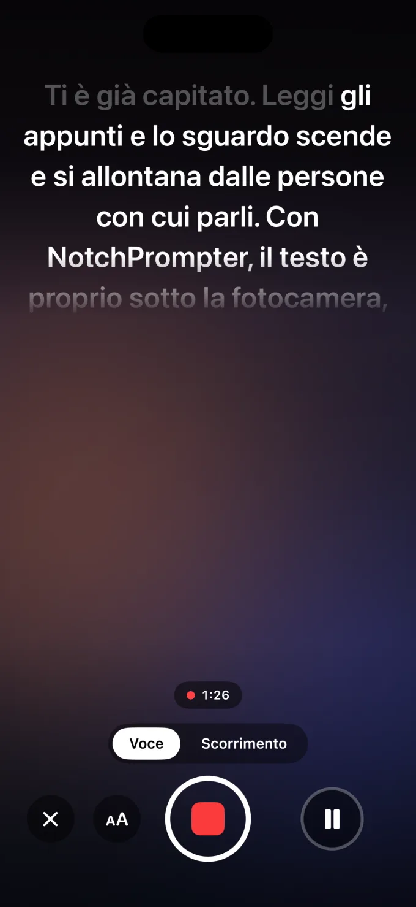

Mantieni il contatto visivo mentre leggi
NotchPrompter mette il testo proprio sotto la fotocamera e segue la tua voce. In qualsiasi lingua, anche quando salti un pezzo, e tutto sul tuo Mac.
Gratuito e open source. Per macOS 15 Sequoia o versioni successive. Dà il meglio su un MacBook con notch, e funziona su qualsiasi Mac con la fotocamera in alto.
Guardalo in azione
Leggi, fai una pausa, salta avanti. Il teleprompter tiene il passo.
Tutto quello che ti serve. Niente che ti intralci.
Un piccolo pannello nero sotto la fotocamera, pochi pulsanti chiari, un piccolo editor per i tuoi testi e un pulsante per registrare.
Segue la tua voce
Premi il microfono e parla. Le parole successive sono sempre proprio sotto la fotocamera. Quelle già pronunciate si attenuano.
Qualsiasi lingua, in automatico
NotchPrompter riconosce la lingua del testo e si mette in ascolto. Inglese, norvegese, tedesco, spagnolo, giapponese e decine di altre.
Tiene il passo quando salti
Salta una frase, cambia una parola, di’ “ehm”. Trova il punto in cui sei e va avanti con te. Fai una pausa, e ti aspetta.
Oppure premi play
Scorrimento fluido con conto alla rovescia 3-2-1. Passa sopra con il puntatore per mettere in pausa, e usa la tartaruga e la lepre per regolare la velocità.
Editor integrato
Scrivi e conserva tutti i tuoi testi in un unico posto. Importa file Word, Markdown, RTF o di testo. Salvataggio automatico.
Registrati
Premi registra per riprenderti con la fotocamera e il microfono mentre leggi. Ogni ripresa viene salvata come filmato nella cartella Filmati.
Invisibile al tuo pubblico
Nascosto durante la condivisione schermo, negli screenshot e nelle registrazioni. Lo vedi solo tu.
Funziona interamente sul tuo Mac
Il parlato viene riconosciuto sul tuo Mac, non nel cloud. Nessun account, nessun tracciamento. I tuoi testi e le tue registrazioni non lasciano mai il tuo Mac.
I tuoi testi, a portata di clic
Fai clic sulla matita nel teleprompter per aprire l’editor. Scegli un testo, premi il microfono e inizia a parlare.
- Scrivi o incolla il tuo testo, oppure importa un file.
- Premi Leggi con la voce.
- Guarda la fotocamera e parla.

Fatto per la fotocamera
Videochiamate, YouTube, corsi, webinar e presentazioni.




Anche su iPhone
NotchPrompter per iPhone mette il copione proprio sotto la fotocamera frontale, segue la tua voce e ti riprende. Ogni ripresa finisce direttamente in Foto.
Puoi provarlo gratis. La modalità Scorrimento, l’editor e il copione di prova sono gratis, e hai 3 riprese gratuite con Segui voce e registrazione. Dopo, un solo acquisto sblocca tutto per sempre: 49 kr in Norvegia, o l’equivalente nella tua valuta. Nessun abbonamento.
L’app per iPhone non è open source. Usa lo stesso motore vocale open source dell’app per Mac. Presto su App Store, per iOS 18 o versioni successive.

Domande
È davvero gratis?
Sì. NotchPrompter per Mac è gratuito e open source con licenza MIT. Niente pubblicità, niente abbonamento, niente account. Il codice sorgente è su GitHub, dove puoi segnalare bug, suggerire funzioni o contribuire allo sviluppo.
NotchPrompter per iPhone si può provare gratis, con un acquisto una tantum per continuare a usare Segui voce e la registrazione. Scopri di più.
Funziona senza notch?
Sì. Su un Mac senza notch, il teleprompter si posiziona nella parte alta dello schermo, sotto la barra dei menu, sempre vicino alla fotocamera.
Quali lingue supporta il riconoscimento della voce?
Decine, tra cui inglese, norvegese, tedesco, francese, spagnolo, cinese e giapponese. NotchPrompter riconosce la lingua del testo e ascolta quella lingua, quindi non devi impostare nulla. Puoi scegliere un’altra lingua nelle impostazioni.
Gli altri vedranno il teleprompter quando condivido lo schermo?
No. Per impostazione predefinita è nascosto durante la condivisione schermo, negli screenshot e nelle registrazioni. Puoi disattivare questa opzione nelle impostazioni se vuoi mostrarlo.
Viene inviato qualcosa al cloud?
No. Il parlato viene riconosciuto sul tuo Mac (con la dettatura attivata in Impostazioni di Sistema), e NotchPrompter non ha server. Il riconoscimento della voce non salva mai l’audio. Solo quando premi registra viene salvato un filmato, nella tua cartella Filmati. Leggi l’informativa sulla privacy.
Quali sono le abbreviazioni da tastiera?
Fai clic sul teleprompter, poi: Spazio play/pausa, V voce, C registra, R torna all’inizio, ↑ ↓ velocità, + − dimensione del testo, E editor, Esc stop.